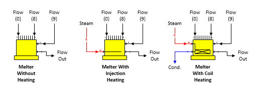

Melter A melter station is used to combine flow streams and melt sucrose crystals using heat (if necessary). Three different melter shapes are provided with Sugars as shown below.

General Features As its name suggests, a melter station is used to melt sucrose crystals in process flow streams (input ports 0 thru 9). It can be heated by a heating flow (input port 10). The heating can be either by injection heating (heating flow is absorbed into the process flow stream), or by coil heating (heating flow is not absorbed into the process flow stream, but leaves the melter after giving up heat to the process flow). Sucrose crystals, if any, are melted until the output flow stream is saturated (that is, supersaturation coefficient is 1.0); however, crystal growth is not allowed, even if the input flow is supersaturated. Up to ten process flows can flow into a melter, but only one heating flow is allowed. The pressure of the process flow out of the melter will always be at atmospheric pressure, despite the pressures of any of the process or heating input flows. If any input flows are pressure feedback flows, the pressure fed back will be atmospheric pressure.
The input flow into port 9 will be a required flow if an entry is made for the dry substance out of the melter (see Melter Properties for "Hold TDM at" entry field). If a dry substance is not specified, the flow into port 9 will not be required unless the output flow from the melter is required and the input flow into port 9 is selected to satisfy the required output flow.
If a heating flow into port 10 is used, it will always be a required flow. If a temperature value is not entered for the flow out of the melter, the quantity of the heating flow will be set to 0.0 by Sugars.
The output flow from a melter can be required by another station, and if it is, one of the input flows into the melter must be made a required flow that can be adjusted by Sugars to satisfy the required output flow. The quantity of the required input flow will be calculated by Sugars to equal the required output flow quantity less the quantities of all other flows into the melter. A small box will appear on the Melter Properties window to select which input flow is to be required when the output flow is required. Input flows into the melter from other stations that cannot be made required will not be displayed in the box.